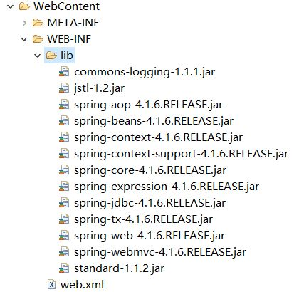
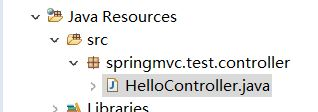
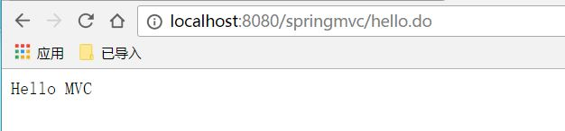

前些日子从oldbiwang那里拷来了关于springMVC的教程视频，学习了如何制作一个spring mvc框架的web应用。这里分享一下学习过程。
首先，编译web程序，可以用eclipse编译器，同时下载web服务器Tomcat，并且在eclipse中配置Tomcat，配置教程。
其次，你需要下载spring包，以及springmvc的依赖包：jstl.jar、standard.jar、commons-logging.jar。
正式开始springmvc框架web程序的编写：
- 在WebContent->WEB-INF->lib中加入下面几个包：
 - web.xml的配置：在xml中配置DispatcherServlet和servlet-mapping。
1
2
3
4
5
6
7
8
9
10
11
12
13
14
15
16
17
18
19
20
21
22
23
24
25
26
27
28
29<?xml version="1.0" encoding="UTF-8"?>
<web-app xmlns:xsi="http://www.w3.org/2001/XMLSchema-instance" xmlns="http://java.sun.com/xml/ns/javaee"
xsi:schemaLocation="http://java.sun.com/xml/ns/javaee http://java.sun.com/xml/ns/javaee/web-app_3_0.xsd"
id="WebApp_ID" version="3.0">
<display-name>springmvc</display-name>
<!--DispatcherServlet配置 -->
<servlet>
<servlet-name>springmvc</servlet-name>
<servlet-class>org.springframework.web.servlet.DispatcherServlet </servlet-class>
<!-- 启动servlet -->
<load-on-startup>1</load-on-startup>
</servlet>
<!-- 配置servlet-mapping -->
<servlet-mapping>
<servlet-name>springmvc</servlet-name>
<url-pattern>*.do</url-pattern>
</servlet-mapping>
<welcome-file-list>
<welcome-file>index.html</welcome-file>
<welcome-file>index.htm</welcome-file>
<welcome-file>index.jsp</welcome-file>
<welcome-file>default.html</welcome-file>
<welcome-file>default.htm</welcome-file>
<welcome-file>default.jsp</welcome-file>
</welcome-file-list>
</web-app> - 在WEB-INF添加springmvc配置文件：[DispatcherServlet Name]-servlet.xml文件（本例创建为：springmvc-servlet.xml）。新建的xml只有编码说明，并没有内容，需要打开spring-framework-4.1.6.RELEASE\docs\spring-framework-reference\html\index.html文件，按下面动图找到该段代码复制到springmvc-servlet.xml中：

- 编写java代码，在Java Resource->src新建一个包（此例包名为：springmvc.test.controller），在包下新建一个HelloController.java的java文件：

HelloController.java的内容如下：1
2
3
4
5
6
7
8
9
10
11
12
13
14
15
16
17
18
19
20
21
22package springmvc.test.controller;
import javax.servlet.http.HttpServletRequest;
import javax.servlet.http.HttpServletResponse;
import org.springframework.web.servlet.ModelAndView;
import org.springframework.web.servlet.mvc.Controller;
//实现Controller接口
public class HelloController implements Controller{
//实现handleRequest方法
@Override
public ModelAndView handleRequest(HttpServletRequest arg0, HttpServletResponse arg1) throws Exception {
//创建一个ModelAndView视图对象
ModelAndView mView = new ModelAndView();
//封装要显示到视图中的数据，向ModelAndView对象中添加数据
mView.addObject("msg","Hello MVC");
//设置视图名
mView.setViewName("hello");
//返回该视图
return mView;
}
} - 配置springmvc配置文件，打开springmvc-servlet.xml，配置handlerMapping和handlerAdapter：配置渲染器：
1
2
3
4<!-- 配置handlerMapping -->
<bean class="org.springframework.web.servlet.handler.BeanNameUrlHandlerMapping"/>
<!-- 配置handlerAdapter -->
<bean class="org.springframework.web.servlet.mvc.SimpleControllerHandlerAdapter"/>渲染器的代码获取方式如下：1
2
3
4
5
6<!-- 配置渲染器 -->
<bean id="jspViewResolver" class="org.springframework.web.servlet.view.InternalResourceViewResolver">
<property name="viewClass" value="org.springframework.web.servlet.view.JstlView"/>
<property name="prefix" value="/WEB-INF/jsp/"/>
<property name="suffix" value=".jsp"/>
</bean>
- 在WEB-INF下新建一个文件夹，名为“jsp”，在文件夹中新建一个.jsp文件，名为“hello.jsp”，jsp的代码如下：msg表示前面java文件中的hello MVC字符串。
1
2
3
4
5
6
7
8
9
10
11
12<%@ page language="java" contentType="text/html; charset=ISO-8859-1"
pageEncoding="ISO-8859-1"%>
<!DOCTYPE html PUBLIC "-//W3C//DTD HTML 4.01 Transitional//EN" "http://www.w3.org/TR/html4/loose.dtd">
<html>
<head>
<meta http-equiv="Content-Type" content="text/html; charset=ISO-8859-1">
<title>Insert title here</title>
</head>
<body>
${msg }
</body>
</html> - 在springmvc-servlet.xml中配置请求处理器表示name属性的请求来的时候，class的属性进行处理。
1
2<!-- 配置请求和处理器,name的请求由calss处理 -->
<bean name="/hello.do" class="springmvc.test.controller.HelloController" />
最终springmvc-servlet.xml的代码如下：1
2
3
4
5
6
7
8
9
10
11
12
13
14
15
16
17
18
19
20
21
22
23
24
25<?xml version="1.0" encoding="UTF-8"?>
<beans xmlns="http://www.springframework.org/schema/beans"
xmlns:xsi="http://www.w3.org/2001/XMLSchema-instance"
xmlns:p="http://www.springframework.org/schema/p"
xmlns:context="http://www.springframework.org/schema/context"
xsi:schemaLocation="
http://www.springframework.org/schema/beans
http://www.springframework.org/schema/beans/spring-beans.xsd
http://www.springframework.org/schema/context
http://www.springframework.org/schema/context/spring-context.xsd">
<!-- 配置handlerMapping -->
<bean class="org.springframework.web.servlet.handler.BeanNameUrlHandlerMapping"/>
<!-- 配置handlerAdapter -->
<bean class="org.springframework.web.servlet.mvc.SimpleControllerHandlerAdapter"/>
<!-- 配置渲染器 -->
<bean id="jspViewResolver" class="org.springframework.web.servlet.view.InternalResourceViewResolver">
<property name="viewClass" value="org.springframework.web.servlet.view.JstlView"/>
<property name="prefix" value="/WEB-INF/jsp/"/>
<property name="suffix" value=".jsp"/>
</bean>
<!-- 配置请求和处理器,name的请求由calss处理 -->
<bean name="/hello.do" class="springmvc.test.controller.HelloController" />
</beans>到此，配置完成，运行，选择Run on Server。打开本地浏览器，输入:
http://localhost:8080/springmvc/hello.do，可以看到运行成功：